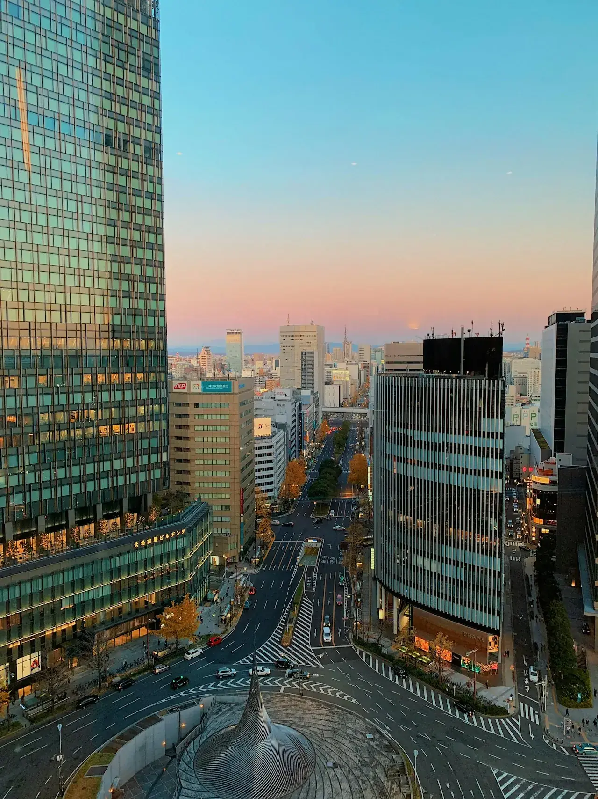
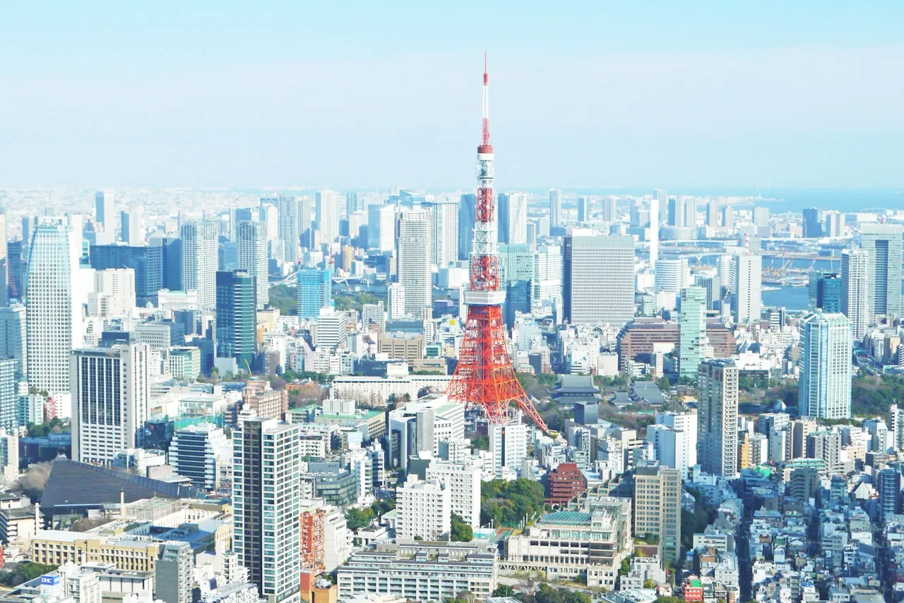

会社概要 — 名古屋・小牧から10社を束ねる持株会社
リブメーカーズ株式会社は、2007年8月17日設立、代表取締役 佐藤修滉の持株会社です。登記上の本店を名古屋市中区大須に、本社機能を愛知県小牧市に置き、2026年開設の東京本社（杉並区阿佐谷）とあわせた2拠点体制で、小売・製造・商社・紙・食・不動産のグループ10社・営業拠点30か所超の経営管理を行っています。後継者を必要とする会社の愛知の事業承継相談も受け付けています。
会社概要表Corporate Data
| 商号 | リブメーカーズ株式会社（LIVmakers co.ltd.） |
|---|---|
| 設立 | 2007年8月17日 |
| 代表者 | 代表取締役 佐藤修滉（伸宏） |
| 法人番号 | 9200001018772 |
| 登記上の本店 | 愛知県名古屋市中区大須4丁目11番14号 |
| 本社 | 〒485-0016 愛知県小牧市間々原新田下新池987 |
| 東京本社 | 〒166-0004 東京都杉並区阿佐谷南3-1-27（2026年開設） |
| 電話 | 0568-71-3201（平日 9:00–18:00） |
| 事業内容 | グループ会社の株式保有・経営管理（持株会社）、事業承継の受け皿運営 |
| グループ会社 |
各社の物語はグループ10社のページでご覧いただけます。 |
| グループ営業拠点 | 30か所超（東海エリア中心） |
※ 本店所在地について：登記上の本店は名古屋市中区大須にあり、実務上の本社機能は愛知県小牧市の本社に置いています。お打ち合わせ・お問い合わせは小牧本社（0568-71-3201）にて承ります。
沿革 — 名古屋から、東京へHistory
-
2007名古屋で創業（8月17日設立）愛知・小牧を本拠に、持株会社として事業承継の受け皿づくりを開始。
-
〜2025東海エリアで10社の経済圏を形成小売（三河屋）・製造（ロークスカレー本舗 1927年創業）・商社（リブネクサス）・紙（アートナップ 2024年、タナカ産業 2025年）・食・不動産を順次承継・統合。
-
2026東京本社を開設東京都杉並区阿佐谷南に東京本社を構え、名古屋・東京の2拠点体制へ。
拠点 — 名古屋・小牧と東京・阿佐谷Offices

本社（愛知・小牧）
〒485-0016 愛知県小牧市間々原新田下新池987

東京本社（杉並・阿佐谷）
〒166-0004 東京都杉並区阿佐谷南3-1-27
よくあるご質問FAQ
リブメーカーズ株式会社の本社はどこにありますか？
登記上の本店は愛知県名古屋市中区大須4丁目11番14号、本社機能は〒485-0016 愛知県小牧市間々原新田下新池987に置いています。2026年からは〒166-0004 東京都杉並区阿佐谷南3-1-27の東京本社とあわせた2拠点体制です。電話は0568-71-3201（平日9:00–18:00）です。
リブメーカーズはどんな持株会社ですか？
2007年8月17日設立の持株会社です。小売・製造・商社・紙・食・不動産のグループ10社（営業拠点30か所超）の株式保有・経営管理を行い、後継者を必要とする会社の事業承継の受け皿として、雇用・技術・地域の暮らしを次の世代へつなぐことを目的としています。
リブメーカーズの代表者は誰ですか？
代表取締役は佐藤修滉（伸宏）です。2007年に名古屋で創業し、東海エリアで10社のグループを築き、2026年に東京本社（杉並区阿佐谷）を開設しました。
名古屋・愛知で事業承継の相談はできますか？
はい。後継者不在などのお悩みについて、無料・秘密厳守でご相談を受け付けています。詳しくは愛知の事業承継相談のページをご覧いただくか、0568-71-3201（平日9:00–18:00）までお電話ください。
リブメーカーズのグループ会社にはどんな会社がありますか？
株式会社三河屋（小売）、リブネクサス株式会社（商社）、株式会社ロークスカレー本舗（1927年創業・カレー製造）、アートナップ株式会社（紙コップ・食品容器）、株式会社タナカ産業（FSC認証紙資材）、リブアセッツ株式会社（不動産）、リブリンク株式会社（多国籍食品）、株式会社アラウンズ（EC運用）、株式会社ヤマダ（肌着）、宮本製作所／エスロッソ（承継・事業開発）の10社です。詳しくはグループ10社をご覧ください。
事業を継いでほしい——その想いを、まずお聞かせください。
愛知の事業承継相談へ →